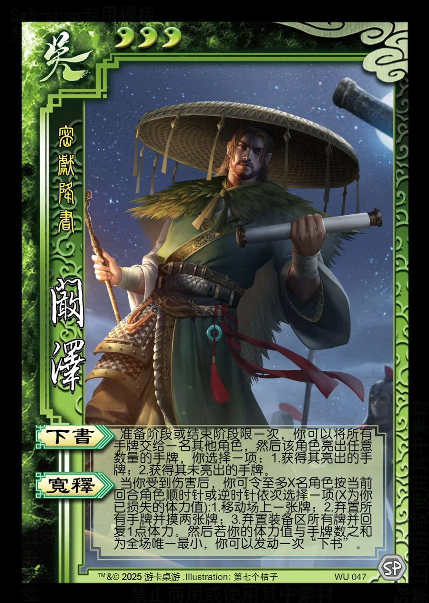

点击卡面查看大图
吴
阚泽
♥3密献降书
下书
准备阶段或结束阶段限一次，你可以将所有手牌交给一名其他角色，然后该角色亮出任意数量的手牌，你选择一项：1.获得其亮出的手牌；2.获得其未亮出的手牌。
宽释
当你受到伤害后，你可令至多X名角色按当前回合角色顺时针或逆时针依次选择一项(X为你已损失的体力值):1.移动场上一张牌；2.弃置所有手牌并摸两张牌；3.弃置装备区所有牌并回复1点体力。然后若你的体力值与手牌数之和为全场唯一最小，你可以发动一次“下书”。